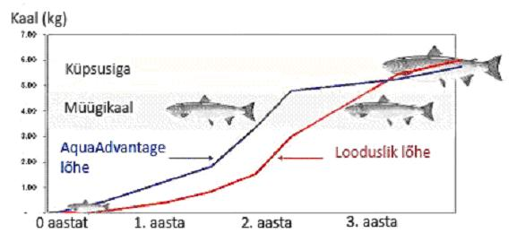

Veeloomade kasvatamisel on maailma toiduvarude tootmisel suur roll ning see on praegusel ajal kõige kiiremini kasvav toitu tootev sektor maailmas. On tõenäoline, et GM kalade kasvatamine hakkab tulevikus domineerima, kuna nad kasvavad oma liigikaaslastest kaks korda kiiremini ning omastavad sööta 30% efektiivsemalt. GM kala vajab 1kg liha tootmiseks 2kg (või vähem) sööta.
Joonis 1. Aqua Advantage lõhe kasvab noorukieas 4–6 korda kiiremini kui looduslik lõhe. Allikas: Next Big Future
2015 aastal toodetakse pool vajaminevast kalavarust kalakasvandustes. ÜRO Toidu- ja Põllumajandusorganisatsiooni (FAO) andmetel kasvab maailma nõudlus kala ja kalatoodete järele 50 miljoni tonni võrra (1999/2001 aastal oli see 133 miljonit tonni, 2015 aastal eeldatavalt 183 miljonit tonni). USA Toidu- ja Ravimiamet (FDA) sillutab teed GM loomadele, keda saaks toiduna kasutada. FDA kinnitab, et inimtoiduks loodud GM loomade kasutamist reguleeritakse samalaadselt veterinaarravimitele ning nad läbivad ohutuse hindamise protsessi. Aqua Bounty Technologies Inc. loodab tuua turule lõhe, mis jõuab küpsusikka kiiremini, kui tema looduslik või kalakasvanduses kasvanud liigikaaslane. Firma kinnitab, et nende poolt loodud kala on inimestel ohutu süüa ning tõenäoliselt ei kujuta ta ka keskkonnale ohtu.